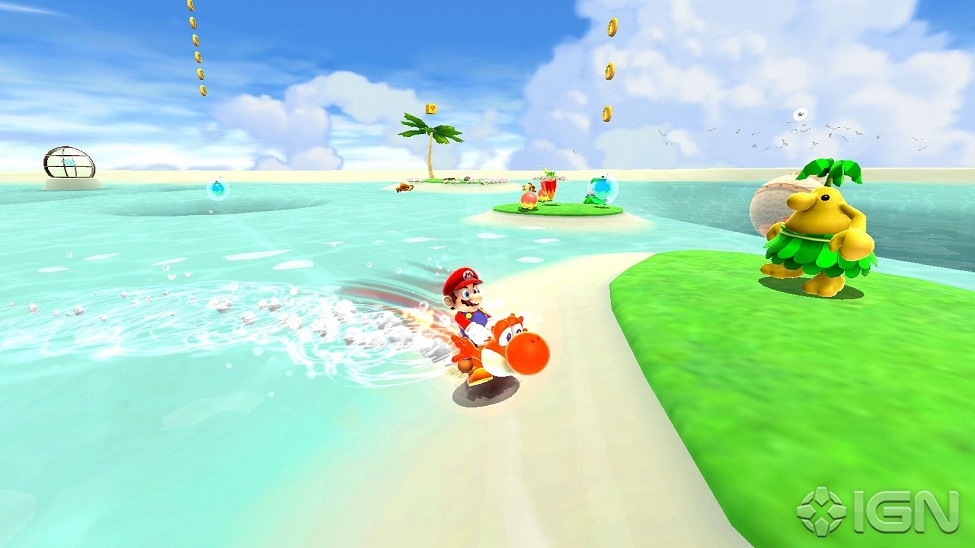

Enjoy a second collection of Mario Oddity articles, even more flamebaity than the other one! Updated regularly! Enjoy.
Super Mario Land: It’s a 1989 launch game for the Gameboy! I like the unique themeing, concept and some of the ideas here. Yes the game overall is mediocre in context of the entire series, but rather interesting and important historically. We must remember how early of a platform game this is for Mario. There was SMB 1 and…. SMB 2! That’s it at least if you were American. So there isn’t a whole lot of precedent set, compounded by this being a launch title for the system. With that in mind I respect it for what it tries to do, bring Mario platforming to your handheld. Of course the limitations show in some elements like the visuals and game play mechanics. For instance there are bombshell koopas instead of koopa troopas because they didn’t want to program shell bouncing. The other enemies also have odd untranslated names which would never fly now. But again, we can forgive some of this for the time. The music is legitimately good. We also introduce Daisy who is infamous for several reasons. Despite it being a main series game, Daisy is regulated to spin offs, entirely unlike characters like Bowser Junior or Rosalina. Having an original villain is neat from our modern perspective where some character choices are cliche, but at the time it wouldn’t be too weird to introduce new characters for new Mario games. I think it’s worth a play through to experience a different environment and some of the unexpected gameplay changes they throw at you. It’s a short journey, in fact that was a complaint back in the day- but leaves you no excuse to not check it out now!
Computer: RANT AHEAD TOO LATE TO TURN BACK
Nintendo is and has always been a company of quality, so what am I talking about? That Tetris computer is a lie, this will not be a big rant or me drinking the haterade, rather a nuanced take based on my observations growing up with Mario and Nintendo since the early 00s.
Let's start with the original 2007 Super Mario Galaxy compared to the sequel in 2010. Personally, while it had fun moments it was to me like on-disc DLC,the developers as much as admitting such. Now, that's not a problem in itself, but the focus was clearly on the levels, an almost stripped down New Super Mario Bros approach. You have no hub, of the Observatory, you travel on the Starship Mario level to level. What little bit of background story the first game afforded isn't even attempted either. They did the dreaded time reset! Some of these changes can be interpreted as quality of life alterations, such as allowing Luigi to be playable without a tedious journey, and as souless and skipping level to level is, it does save time, so not everything I'm pointing out is negative. This game is only the proto-example of the trope above. Only a glimpse of what was to come. That brings me to this:
The 'Super Mario Galaxy 2' effect is when a sequel or next game in the series is polished and objectively 'better' in ways that are dazzling yet more shallow than it's predecessor, sometimes inexplicably inventing problems or at worse removing what made series popular with fans.
Above: Some good ideals and some godawful ones like this..
To give this viewpoint some background, I consider the Wii was the last ‘uncharted’ era for Mario, where even then there were signs of the times: a lot of sequels, or series continuations there as well. The reason I don't feel these apply to the above however, is that while incorporating what many feel are gimmicks like motion controls, most of those games aren't half baked jobs like we start to find in the WiiU era. Here came the rehashes, cookie cutter entries, or content starved continuations of much beloved sub-franchises..
The common link in the chain of mediocre games is this: When something is GREAT, or even just 'okay', Nintendo milks it to death and gets away with it most of the time too. Super Mario 3D Land was a great game and 2013's 3D World as well, if unnecessarily padded at times.. Remember what I said happens to good stuff? We'll come back to those. Mario Kart 7 is well like by many , but it was rushed out the doors. I talk about it more here. Paper Mario had it’s biggest and most divisive bomb in 2012, Sticker Star. It’s never 'fully' recovered since. Mario Party was already getting shaky with some, but nothing ruffled feathers like Mario Party 9 in that same year. Again the franchise has not fully recovered. New Super Mario Bros 2 is often called the weakest entry. Guess what? 2012. See a pattern? Mario Tennis Open? More like 'Mario Tennis Empty of Content'. New Super Mario Bros U was better, but has also been rehashed twice since. Yoshi's New Island wasn't loved too much in 2014 for besides the levels, the appearance and sound.
It keeps going.. The original version of Mario Kart 8 from 2014 had more content than & MK7, but was lackluster enough for them feel the need to revitalize rather than simply port it over in 2017 for Switch. (More thoughts on rereleases far below) MP10 refused to let go of the car in 2015. Mario began to branch out into mobile games too. I don't want to dip too far into those. I don't have high regards for that platform in general. I believe the consensuses is that they are decent, just not comparable to a full console experience. Let's get back on track. All we are describing is a mild yet insidious decline in the quality of Mario games and, some ways, our tolerance for it as long as it isn't a dumpster fire, which Mario almost never is. Is there hope?
Exceptions: ..Sure? And in unexpected places. The Mario golf titles are more solid, at least compared to what's happened to a lot of the Tennis ones. Mario Party Superstars is one rehash that makes some sense to me, pulling from several generations back as opposed to all of the WiiU stuff being dragged onto the Switch instead of newer ideas. There are additional glimmers of magnificence in this era, where you can really tell they 'got it' and captured the spirit of old Mario. Mario Odyssey did that, straying thankfully from the railroading in the Galaxy games. I had some issues with Paper Mario Origami King's gameplay, but from a narrative perspective, it's undeniable they were trying to write the most genuine and witty way possible with their strict characterization restraints. Also to day, it's the best implantation of the new Paper Mario style.
Update: More on this. Well in 2023 my point mostly stands. Super Mario Wonder seems interesting which will date this portion. (I'll update later) There are a lot of remakes too like of Super Mario RPG and Paper Mario: TTYD. These are for fans that were too young for the originals, not into gaming, or had sold or lost their old systems. I fully respect that, however, being selfish here, I own my vintage stuff, so while I'll not be exactly against remakes I'll not champion for them either much. I. Want. New. Content. Now back to the subject, let's talk about an aversion to this effect more clear so I’m not totally a crotchety old fan.
:format(webp)/cdn.vox-cdn.com/uploads/chorus_image/image/63842405/Switch_SuperMarioMaker_ND0515_screen_06_tif_jpgcopy.0.jpg)
Above: Despite cheap gimmicks, there's something solid here
-Mario Maker 2. Is actually an improved sequel. See trope. Ha (they kinda suck these days), no but really. The 3D world assets clash horrendously in my opinion with the SMB/ SMW/ SMB3/ NSMB Wii U styles, because in those games Mario runs on 3D platformer logic more than 2D, and the 3D world stages produced to lock you in 2D only but.. I digress. Making custom worlds is cool even if too much effort for a lot of people to bother with unfortunately. Don’t get me wrong, some old problems carry over, some hard to impossible to curve on a game sourced by user generated levels. There’s the not always perfect way the game ‘grades’ the difficulty and thus curating of levels. The homogeneous trend hopping and pandering to Let’s Players, troll levels, pseudo kaizo, or being too easy with hardly any in between, and a new problem ‘Worlds’ that are just random levels on shuffle. The challenge mode is tweaked to only be on infinite instead of having an end point. Not that bad, but it does lead to players over curating the levels instead of giving some a fair try, because you must conserve lives more than ever. Oh well. Good try at least.
What is it?
Super Mario Bros 35 is a limited time online multiplayer battle royale 2D game on the Nintendo Switch, available only until March 31, 2021. At the time of writing this, that’s certainly in the past. This game is based on the NES’s Super Mario Bros and while it may seem like a fun remake, this is really an endurance match. To start thirty-five players simultaneously play through various levels from the original game and your goal is to be the last player standing. Every player’s screens and their progress are visible and at any time, and as long as the player has coins they can use an item Roulette to possibly help them. That will not be easy as each enemy you defeat is sent to the screen of another player, which in particular you can determine or leave random. There is also a timer always counting down that will end your run if it reaches zero. Of course this free game is only for those with a Nintendo Online subscription. So.. not free. Or is it?
So was it any good?
Yes, for a quick run or two. Let’s go back to what endurance aspect. Most players drop out really quick (like pathetically quick) even while the easier levels are being queued up. It’s not easy to understand how the levels are served at first so let me briefly explain. Before a match starts you can choose a level to play, though you will only have 1-1 at first. You’ll have more to add to your ‘vote’ in the item pool after you clear a level at least once. From then the levels are coming up in a pattern. Warp zones let you skip around just a bit. Realistically you primarily played either really early or really late levels. Few in between. I swear the athletic levels were the bane of my existence assuming I didn't have an item!
The verdict:
When the game was active I won a few times and if not that, placed top three no issue. That’s disconcerting when I’m not particularly skilled. That was always my issue. The premise of the game, thirty-five players playing SMB1? It never happened. Within a minute or two every match is basically between maybe five or so decent players while everyone else has already died in 1-1 or 1-2. It came down to not making dumb mistakes, not getting stuck in the harder levels towards the end, having enough coins to spam your roulette if you need, and defeating multiples when there’s a horde of bad guys at you. That last point specially after they altered the timer to be more aggressive. There were unlocks and levels in the game but it literally does not matter now, so I won’t even give it its own section... Anyway, happy 35 anniversary, Mario! I think.
It is: When a previously maligned entry is viewed in a more positive light later because subsequent entries stay even further or are worse in some other way. I think of Super Paper Mario first because it didn't love it right away. It was one of my earliest Wii games and I sold it off the first time, only repurchasing and beating it a few years later. I wasn’t sold on the real time combat, the non-Mushroom Kingdom settings, some of the scenarios, the lack of traditional partners, the way the four main characters were teased but hardly utilized due to game structure, etc. Now a days I appreciate a lot of the smaller touches still included, elements to be swept away in the later 'modern' Paper Mario. Please read this for more insight on that Why Super Paper Mario is a 'true' Paper Mario.
The crux of this effect is reevaluating an entry with a new lens, seeing clearly elements taken for granted, like a reverse nostalgia goggles. Here's another game.
Mario Party 8: Chastised for motion control over reliance and it is true, even in menus when you’d think buttons would be okay, but it’s the last classic example of Mario party. It does forgo the wonderful orbs for simplistic candies which is a downside and it does retread some familiar ground board design wise, but it does new things too and has plenty of extras like a Mario Party should. Now I don’t like the host as much as previous ones and some minigames will make you go ‘hey stinky’ like Mario. Anyway, per the effect, when Mario Party 9 ripped the rug away it should looked a lot better.
No order! Hear me?
1. Super Mario Bros 4: Super Mario World: This my favorite platformer no doubt for the graphics, the settings, and the gameplay. Exploring is so fun, the world feels so big, and the controls are so responsive. It’s I feel a big leap for our red plumber and the first (to me) ‘modern’ 2D Mario game. I like Super Mario Bros 3, which also plays and controls well and has some interesting level design, but it’s a more primitive adventure, and I mean that in the most respectful way possible. It’s a slog to get through if you really want to explore the game without warping around (a big pet peeve of mine). Super Mario World does not have that issue, and in fact encourages you to find secrets all of the time. Like SMB3, the worlds are diverse yet reigned in somewhat to fit the theme of Dinosaur Land. This extends to the items too, as there are fewer here than the previous game, yet what we have is refined and not a rare gimmick you may only enjoy for a level or two. Plus, as a personal aside, Yoshi and the Cape Feather beat the Tankooki suit any day. Okay, sure the Hammer Suit is really cool in SMB3, but how often did you use it without cheating with a Game Genie? Be honest!
I like the reserve item in stage, but miss the supply you had in previous games. Some NSMB titles would bring that back. Nonetheless items are frequent in level with one level existing to supply you and nothing more, almost egregiously, but appreciated. I like the mechanics of holding items, kicking and catching them, even while climbing, a sorta niche but nimble mechanical actually stripped from later games. I used to think the music was blah, but that is because I grew up on the GBA port. The SNES sound font is full of much more depth, making the tracks and sound effects pop. Speaking of the mixing, this game sounds very open in a unique way. Some of the platformers before this game and even much later with the infamous NSMB games, the music feels louder, takes up more of the soundstage, and etc.
Is it perfect? No. The save points are not as convenient as a newer game would have them, but you can invent a sort of quick save if you know how. (Aka, complete a Ghost House quickly) Some secrets get formulaic, typically involving flying somewhere with a cape or using Yoshi. Navigation can be slow if you don’t have all of the Star Road cleared and accessible. Some of the Koopaling fights are copies of each other (but.. that’s a sin for a lot of Mario games, even newer ones!) The overall difficulty outside a few special levels feels a little on the easier side, particularly compared to SMB3. Mario in the SNES version (fixed in GBA, see my coverage on differences) is reduced to small Mario with a single hit. Not something I like when this auto-deploys your reserve item.
Overall, it couldn’t be more apply named. Unlike SMB3 where technically you travel a lot more, those levels are separated from each other. (Sorta. GBA port shows the proximity of the numbered kingdoms, but that’s hardly referenced) Here the worlds genuinely flow and while offering some diversity, also link common themes to make you feel like you’re on a dinosaur land adventure.
2. Super Mario Bros Deluxe: A GBA color ‘enhanced’ port of SMB. Why am I lauding it? I consider this a precursor to the Mario Advance series remakes. It ports over the NES classic with a few tweaks (such as allowing you to backtrack a little) to account for the screen resolution. Some people have trouble with it, but you can get used to it after a while. This was actually the first time I beat the game via this port. It added a map system for fluff, but also a helpful save system. Now we get to the goodies. They added extra ‘modes’. One is a general treasure hunt of sorts and it’s no laughing matter. Special coins and yoshi eggs are hidden in the vanilla SMB1 levels and you have to find them. Just try without a guide.. There’s also a You vs Boo race where you do what it sounds like and race the incorporeal baddies through a level while trying to survive. There’s stamps and other goodies that.. well you need attachments to enjoy so nevermind. Had to sell those somehow!
Like I said at the outset, it feels a little ahead of it’s time. Super Mario All-Stars had already reissued older games with new graphics and a few quality of life tweaks, but here we port a game, do it on a portable system in an era where handhelds are the lesser offering literally because of processing power, but also reputation somewhat, and we add bonuses now, in addition to qol tweaks. It’s just a cool underrated game!